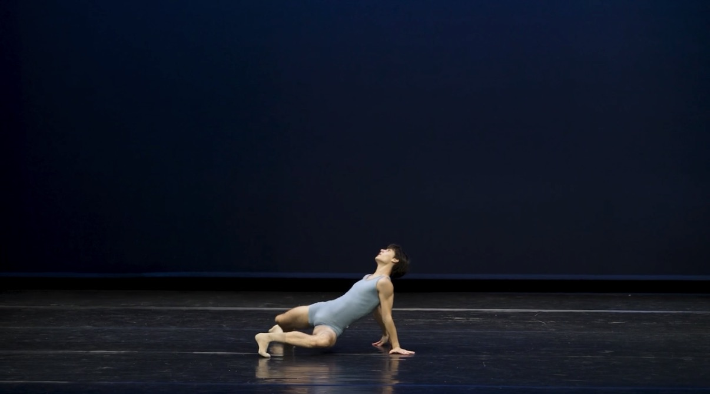
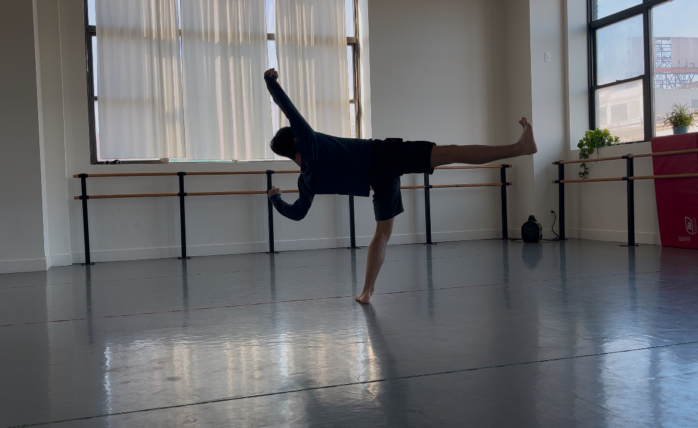

Kai Misra-Stone is a native New Yorker who has been dancing since he was eight years old. He is a rising first year at the Arts Umbrella Post Secondary program in Vancouver, British Columbia. He is soon to be a graduate from the LaGuardia High School for Performing Arts as a dance major.
Kai started his training at the School of American Ballet. After several years of formative ballet training, he moved on to dance at LaGuardia High School, where he discovered a newfound love for modern dance. Continuing his ballet studies at LAG and Manhattan Youth Ballet, he studied modern techniques such as Graham, Limon, and Horton. He will continue to dance, attending the Arts Umbrella Post Secondary Dance Program starting this fall. Kai is inspired by companies and artists such as The Martha Graham Dance Company, Jiri Kylian, Sharon Eyal, and Ballet BC.
